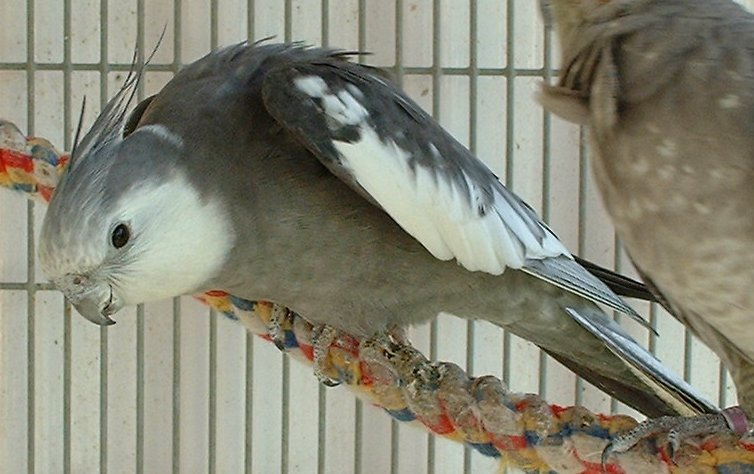

COCKATIEL
Cockatiels were previously considered a small cockatoo; however, more recent studies have assigned it to its own subfamily, Nymphicinae. It is, therefore, now classified as the smallest of the cockatoo family.
- Scientific Name:Nymphicus hollandicus
- Average Length: 23-25cm
- Average Lifespan: 20-25 years
- Native Region: Australia
The cockatiel (Nymphicus hollandicus), also known as the quarrion and the weiro, is a bird that is a member of the cockatoo family endemic to Australia. They are prized as household pets and companion parrots throughout the world and are relatively easy to breed. As a caged bird, cockatiels are second in popularity only to the budgerigar.